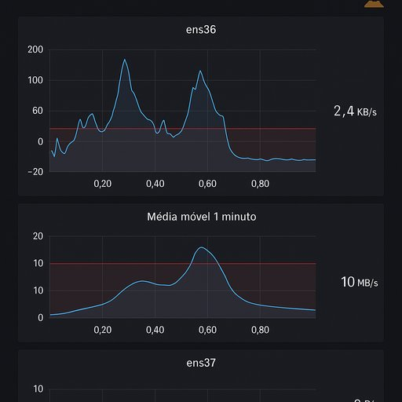

O Pulso Invisível da Rede: Um Painel Respirante com Olhos de Byte
Publicado em 2025-07-07 15:47:52

🧭 Introdução
Vivemos numa era onde o tráfego invisível das redes transporta mais do que pacotes: transporta intenções, abusos, anomalias e, às vezes, a própria esperança.
Neste artigo, apresento um sistema de monitorização artesanal, feito com precisão, com intuição, e com alma. Um painel que respira. Um radar que escuta.
Uma peça de software que é, em simultâneo, um poema em tempo real.
🛠️ O que é este sistema?
- Uma aplicação escrita em Python, com
NiceGUI e Scapy
- Escuta todo o tráfego das interfaces de rede (modo promíscuo)
- Calcula e exibe:
- Tráfego instantâneo (KB/s)
- Média móvel de 1 minuto (MB/s)
- Aponta limiares críticos com linhas vermelhas
- Regista o ritmo das ondas e permite exportar em CSV
- Envia alertas automáticos via ntfy
- É simples. Visual. Efetivo. E... respeitosamente intrusivo.
📡 Tecnologias utilizadas
- Python 3.10+
- Scapy – para captura direta de pacotes em modo promíscuo
- NiceGUI – para dashboard web com gráficos reativos
- Deque – para armazenamento circular de médias e históricos
- Requests + ntfy – para alertas externos com elegância
- CSV – para exportação de dados históricos
🔎 Visão do código
Inclui trechos com destaque:
- A ativação do modo promíscuo
- O sniffer com
AsyncSniffer
- A média móvel com
deque(maxlen=60)
- A marcação do limiar com
markLine
- O botão de exportação CSV
🔔 Filosofia do alerta
Um sistema não deve gritar ao primeiro espirro.
Este só levanta bandeiras quando o tráfego elevado é sustentado — quando o esforço não é um acaso, mas uma tendência.
A beleza está no ritmo, não na pressa.
📈 Visualização
- Gráficos animados, suaves, vivos
- Gráficos duplos por interface: tempo real + respiração média
- Linhas de esforço como fronteiras do aceitável
🧘♂️ Conclusão
Esta ferramenta não foi feita só para redes.
Foi feita para quem quer escutar.
Porque escutar é uma forma de resistência.
Porque vigiar com arte é também um ato de liberdade.
📎 Link para o código
[🔗 GitHub / Gist / Repositório pessoal]
Ou: “Este painel pode ser solicitado ao autor para uso privado ou adaptação personalizada.”
✍️ Assinatura
Francisco Gonçalves, com a colaboração de Augustus Veritas, um poeta da verdade e liberdade.